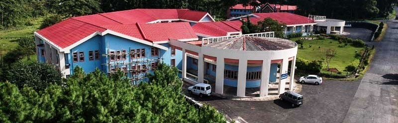

How to Reach Shillong
By Air
Shillong can be conveniently accessed by air via the Shillong Airport,a domestic airport catering to travelers heading to the captivating capital of Meghalaya, India. Nestled in Umroi, the airport is positioned approximately 35 km away from the bustling city center.
You can also fly to **Guwahati Airport (Lokpriya Gopinath Bordoloi International Airport)** and then take a taxi/bus to Shillong.
By Road
Shillong is well connected by road. It is about 100 km from Guwahati via NH-40, which takes about 2 hours and 46 minutes. Regular buses, shared taxis, and private taxis operate between Guwahati and Shillong.
The drive offers scenic views of the hills and landscapes of Meghalaya.
By Rail
The nearest major railway station is at Guwahati. From there, taxis and intercity buses are available to Shillong.
The railway station connects Guwahati with major Indian cities.
Conference Venue Location

Multi Use Convention Hall, NEHU, Shillong